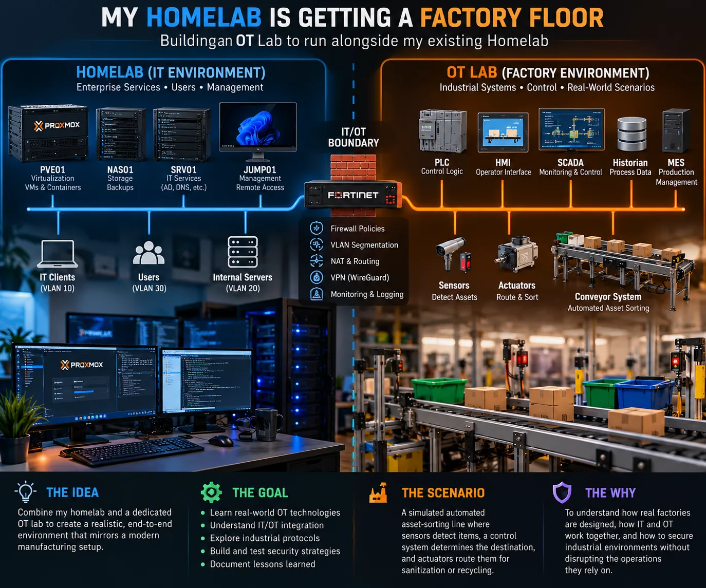

Contribution and Supporting Artifacts
I am designing and building the learning environment. The sorting process, control-system integrations, and failure tests are planned; no completed process validation is claimed.

Bring the Manufacturing Questions into the Lab.
I work in manufacturing, where IT and OT cross my path every day. I want to understand more than the individual roles of a PLC, HMI, or SCADA system: how they work together, where IT fits, and how dependencies affect the process.
My role: I am designing and building the dedicated OT learning environment, with Proxmox providing virtualization, Cisco switching underneath it, and Fortinet at the IT/OT boundary.
Two Environments, a Deliberate Boundary.
The existing homelab provides the IT environment. The developing OT side provides the simulated factory. The boundary between them is the central area of investigation.

Simulate an Automated Asset-Sorting Line.
The first scenario is an asset-sorting process with sensing, control, operator interaction, visibility, and recorded process history.
Explore the Boundary, Not Just the Happy Path.
- What communication needs to cross between IT and OT, and what should remain separate?
- What happens to the simulated process when communication fails?
- Can the factory-side simulation continue without IT services or Internet connectivity?
- How can remote access be provided without unnecessarily exposing the control network?
- How can security controls protect the environment while preserving the process it supports?
These are planned investigations, rather than claims of tested resilience or completed security controls.
Keep the Learning Loop Visible.
The lab gives me a place to investigate manufacturing technology without a production line depending on the experiment. Future records will describe each scenario, the expected behavior, observed evidence, changes made, and results.
Network segmentation and connectivity work →
Existing IT infrastructure and workload placement →
← Return to projects